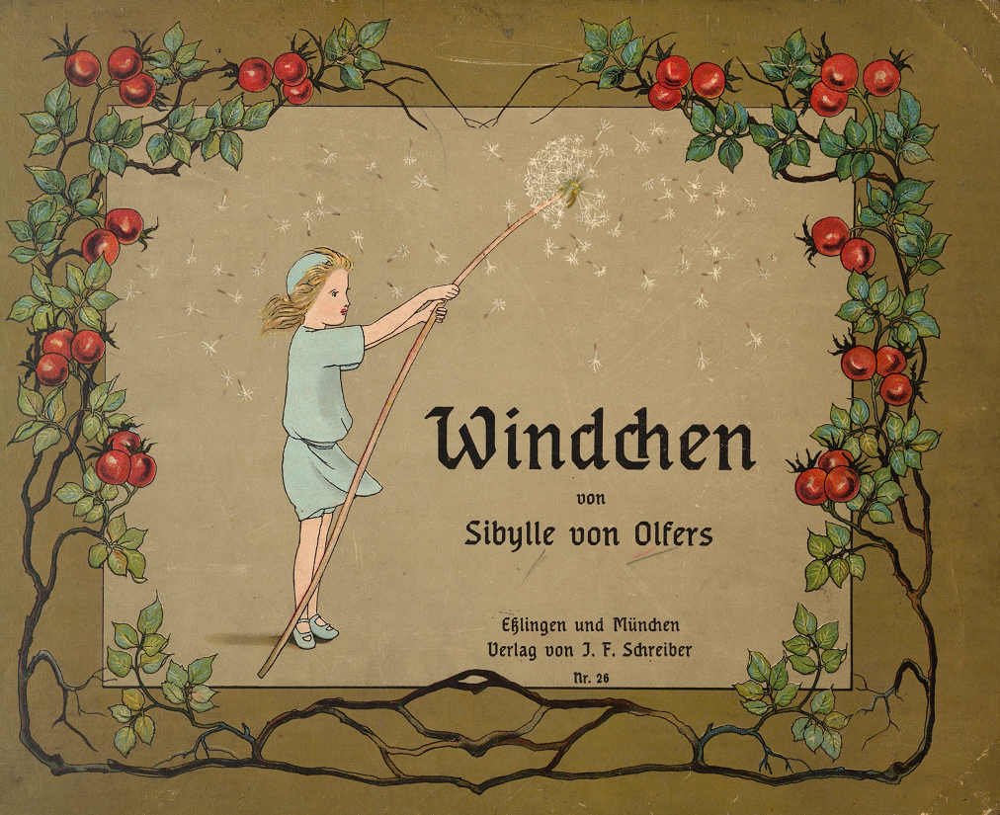
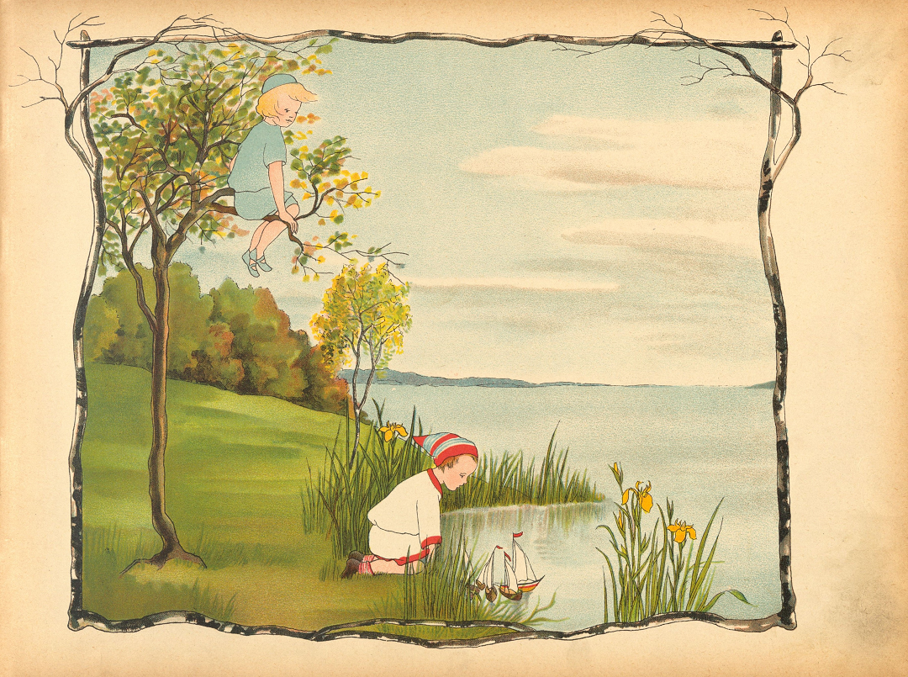
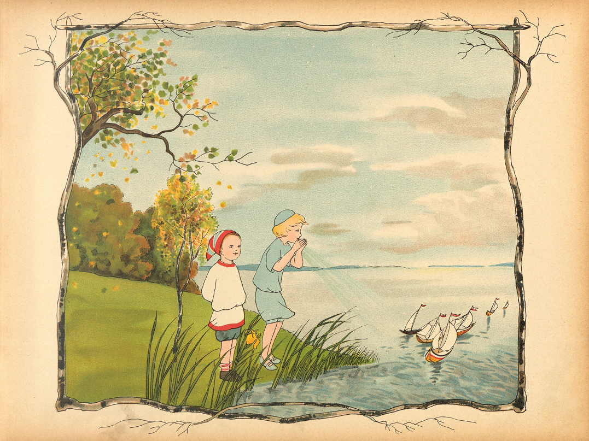
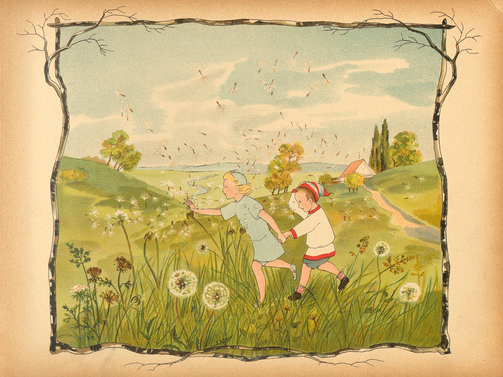
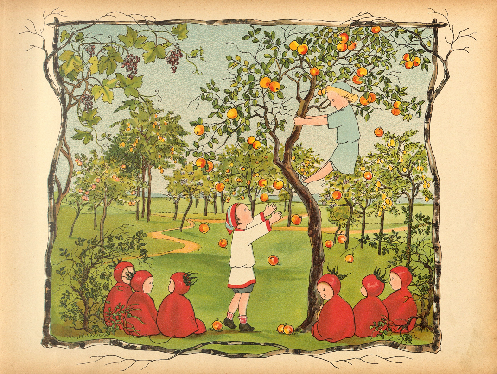
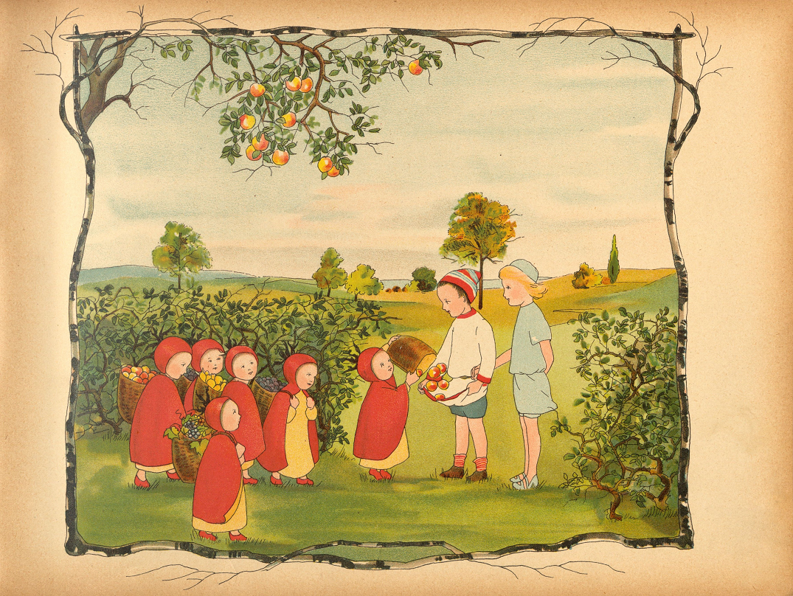
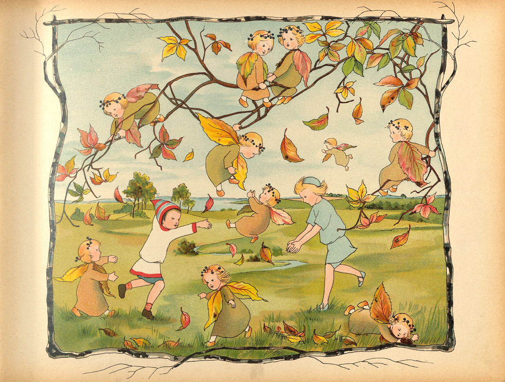
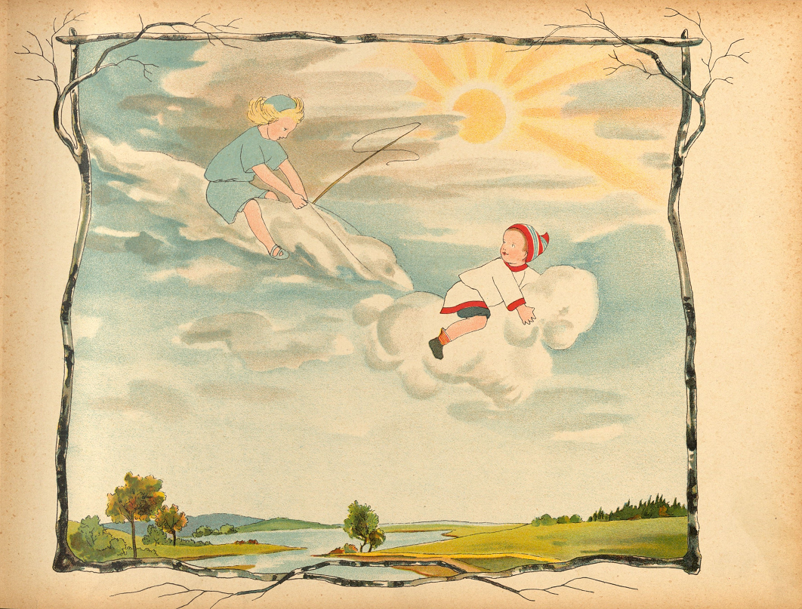
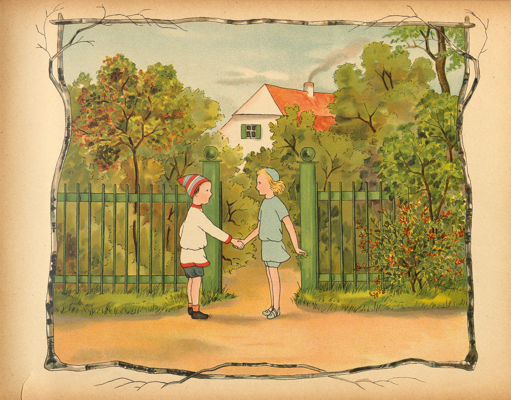

かぜのこ にこにこ きのうえから
ましたの おとこのこ みてみると
こはんで あそびの まさいちゅう
おもちゃの こぶねを ぷかぷかり

かぜのこ あとさき かんがえずに
おとこのこの そばに とびおりて
ぴゅうと ふねに おいかぜふくと
おとこのこも むしろ ごまんえつ

かぜのこ おとこのこの おててを
つかみ さあいくよと まっしぐら
おかや のはらを のぼり くだり
おとこのこも さすがに いきぎれ

きれいに みのる りんごの まえ
かぜのこ ぴょいと きのぼりして
ゆめみたいな きらきら りんごを
ゆさゆさ じめんに おとしてゆく

すると ころころ いばらのみのこ
しょいかご いっぱいの おかえし
さて くいしんぼうの おとこのこ
これには もちろん だいまんぞく

かぜのこ わくわくが とめどなく
ふいに ふざけて いろとりどりの
はっぱを かぜで ふきちらすので
そのこも たのしくて たまらない

さあ ぴょんと くもに またがり
ふたりして そらを ひとっとびだ
かぜのこ じめんに やっほといい
おひさまに おいでと よびかける

やがて ふたりは おうちのまえに
かぜのこと おわかれの おじかん
ねえ あしたも ふたりで あそぼ
うん じゃあまたねと おとこのこ